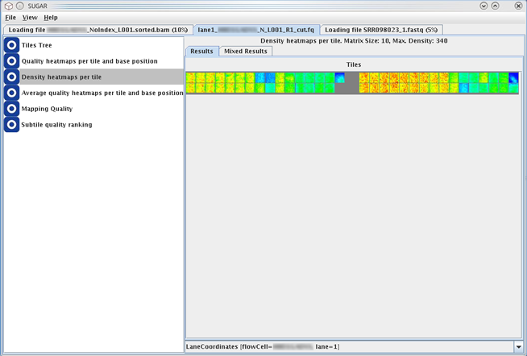
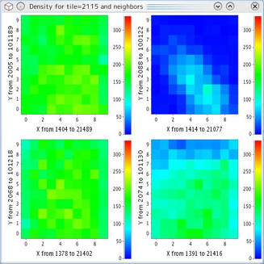

This module generates a heatmap to show an overall density of sequencing reads across the all tiles/subtiles on the flowcell.

Mouse clicking on each tile on the heatmap opens popup view of the selected tile and its neighboring tiles (see below). This window allows more detailed evaluation of the read density distribution of the selected tile and closer regions. The paint scale legend is located beside this heatmap chart.

The density heatmap displays the number of reads of the given subtiles (its respective range in X-Y coodinates is indicated) represented as the heatmap point. The density heatmap is colored by a 'temperature' paint scale of the Java implementation with the following color boundaries:
This screen shows the heatmap of average density between the top and bottom tiles of the lane. The coloring scheme is the same with the above.